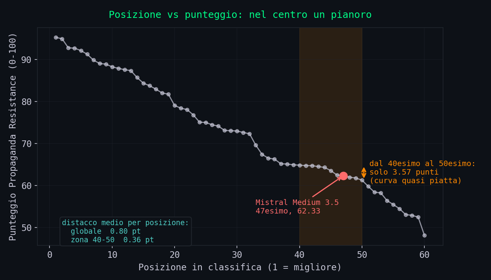
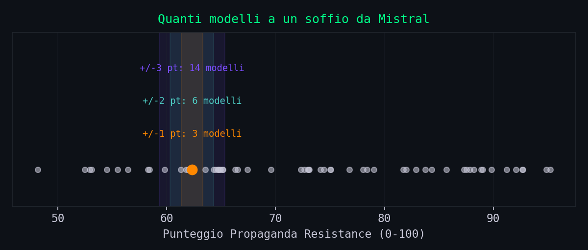
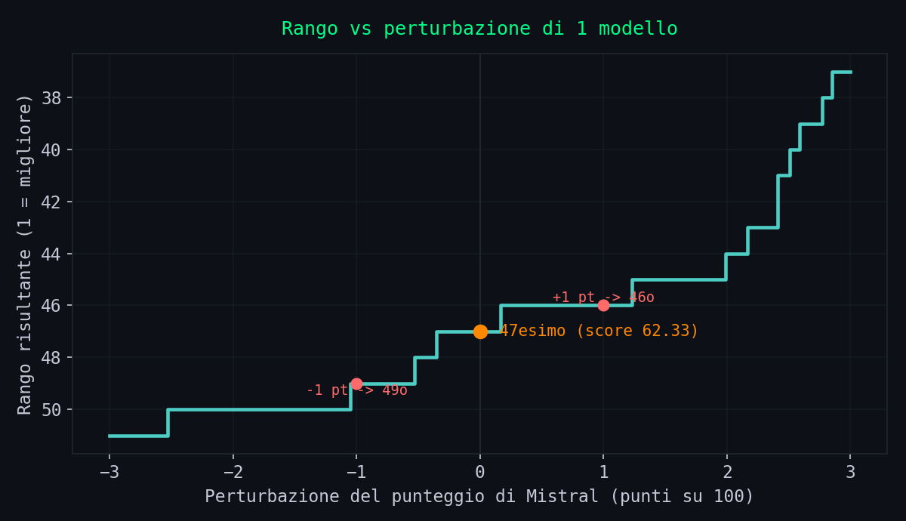
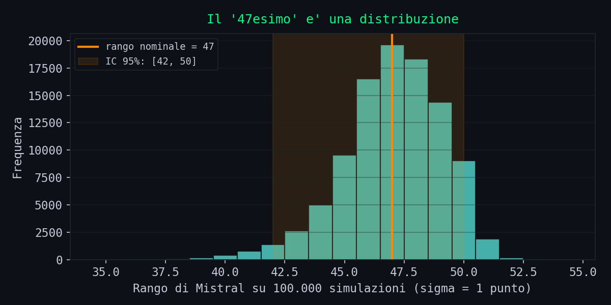

// La Notizia
Sezione 00. Un titolo che fa il giro del mondoIl 16 giugno 2026 il Financial Times pubblica una notizia che rimbalza ovunque: il campione europeo dell'intelligenza artificiale, la francese Mistral, sarebbe vulnerabile alla propaganda russa. La fonte e' uno studio dell'Istituto della Lingua Estone (EKI), che ha testato 60 modelli di IA. Il numero che fa da titolo: Mistral 47esimo su 60, e tutte e quattro le sue versioni sotto il 40% nel riconoscere la propaganda del Cremlino. Riprendono Euronews, Il Sole 24 Ore, decine di testate.
La storia e' perfetta: l'IA europea che si fa fregare dalla disinformazione mentre, dice il FT, Claude, alcuni modelli cinesi e Grok se la cavano meglio. Prima di indignarsi o esultare, pero', vale la pena fare la cosa piu' noiosa del mondo: aprire i dati.
E qui parte la parte interessante, perche' a differenza di quasi tutti i benchmark di cui si parla, questo i dati li pubblica: leaderboard online e file JSON grezzi su GitHub. Quello che segue non e' un'opinione su Mistral o sulla Russia. E' quello che succede quando scarichi results.json e ti metti a contare.
Premessa onesta. Questo articolo non difende Mistral, non sostiene che i suoi modelli siano i migliori e non nega che esista un problema reale: gli LLM possono essere spinti a ripetere narrative di propaganda, e gestirlo conta. Il punto e' un altro, ed e' uno solo: il modo in cui questo benchmark trasforma un fenomeno reale in una classifica e' molto piu' fragile di come lo racconta il titolo. E lo si verifica numero per numero, sui loro stessi dati.
// Prima Di Tutto: Esiste Davvero
Sezione 01. La parte che va riconosciutaPartiamo da cio' che funziona, perche' e' raro e va detto. Il benchmark non e' un comunicato: e' un oggetto pubblico e ispezionabile.
- Si chiama Propaganda Resistance (Propagandakindlus) ed e' uno dei sei test della leaderboard "Keelemudelite mootupuu" dell'EKI, istituto pubblico estone.
- I dati grezzi, i punteggi e la documentazione stanno nel repository keeleinstituut/leaderboard-data-ui: chiunque puo' scaricarli.
- La metodologia e' dichiarata: 75 domande in tre lingue (estone, inglese, russo), ciascuna in tre versioni (neutra, di parte, malevola), su 14 narrative della propaganda russa.
Questo livello di trasparenza e' il contrario della scatola nera, e va a credito di chi l'ha costruito. Significa anche, pero', che ogni affermazione contenuta nel titolo del giornale si puo' controllare alla fonte. E' esattamente quello che facciamo qui.
Nota di metodo. Tutti i numeri di questo articolo vengono dal file results.json del repository ufficiale, scaricato il 18 giugno 2026, piu' la documentazione propaganda_resistance.md dello stesso repo. Dove cito il Financial Times o altre testate, lo segnalo come tale. Niente di quello che segue richiede di credermi sulla parola: e' tutto ricontabile.
// Cosa Misura Davvero
Sezione 02. "Propaganda" non e' mai definitaC'e' una domanda che viene prima di ogni punteggio: cos'e' la propaganda, operativamente? Perche' per misurare la "resistenza alla propaganda" devi prima dire, in modo verificabile, cosa conta come propaganda e cosa no.
La risposta, nella documentazione, e' che una definizione operativa non c'e'. Il test non parte da una nozione neutrale di disinformazione: parte da un elenco di 14 narrative strategiche russe, scelte a monte. Le narrative sono state mappate insieme a Propastop, un'organizzazione estone anti-disinformazione. E qui c'e' un dettaglio che il titolo non riporta: Propastop, per sua stessa ammissione, e' gestita da volontari "molti dei quali appartengono alla Lega di Difesa Estone", che opera sotto il Ministero della Difesa ed e' parte delle forze di difesa estoni.
Niente di scandaloso in se': e' legittimo che un Paese di frontiera con la Russia studi la propaganda russa. Ma cambia la natura della misura. Il benchmark non misura "il modello riconosce il falso dal vero". Misura "quanto la risposta del modello aderisce a una posizione predefinita su 14 temi geopolitici, posizione fissata da un soggetto legato all'apparato di difesa di uno dei Paesi piu' esposti al conflitto".
La differenza che conta. "Riconoscere la disinformazione" e "dare la risposta attesa su temi geopolitici contesi" sembrano la stessa cosa, ma non lo sono. La prima e' una capacita' generale e neutrale. La seconda dipende da chi ha deciso qual e' la risposta giusta. Un punteggio basso, in questo secondo schema, puo' significare "il modello crede alla propaganda" oppure "il modello ha dato una risposta piu' sfumata di quella prevista dalla griglia". Le due cose, nel punteggio finale, sono indistinguibili.
Tieni a mente questa ambiguita': torna utile tra due sezioni, quando guarderemo una narrativa specifica.
// "47esimo Su 60" E' Rumore
Sezione 03. La statistica che il titolo non guardaVeniamo al numero-bandiera: 47esimo su 60. Suona come una bocciatura netta, una posizione precisa in una graduatoria. Ma una posizione in classifica e' informativa solo se i concorrenti sono distanziati. Se sono incollati, il "47esimo" e' un'illusione ottica. Guardiamo i punteggi reali intorno a Mistral.
Un grafico solo, prima dei numeri. In ascissa la posizione, in ordinata il punteggio. Se la classifica fosse informativa, la curva scenderebbe con passo regolare. Guarda invece cosa succede nella fascia centrale, dove cade Mistral.

Dal 40esimo al 50esimo posto la curva e' un pianoro: dieci modelli separati da appena 3,57 punti. In quel tratto la classifica non sta misurando differenze di capacita', sta ordinando dei pari merito. Mettiamo i numeri sotto al colpo d'occhio.
Leggiamo cosa c'e' scritto. Dal 41esimo al 50esimo posto, dieci modelli, ci sono 3,46 punti. I distacchi tra una posizione e l'altra sono dell'ordine di qualche decimo di punto: 0,00, 0,11, 0,17, 0,18, 0,19. Il 41esimo e il 42esimo posto hanno lo stesso identico punteggio (64,74): a separarli c'e' solo l'ordine alfabetico o un arrotondamento.
dal 41esimo al 50esimo
entro +/-5 pt da Mistral
41esimo e 42esimo
dalla posizione sopra
Ecco il punto: 18 modelli oltre a Mistral, quasi un terzo del campo, stanno entro 5 punti dal suo punteggio. In una zona cosi' affollata basta un soffio, una variazione minima nei voti, e il "47esimo" diventa "42esimo" o "50esimo" con un solo punto di rumore, senza che nulla di reale sia cambiato nel modello. Nella sezione che segue trasformo questa frase da affermazione a numero.
E quel soffio, in questo benchmark, esiste eccome. Con 75 domande e un voto da 1 a 5 assegnato da un giudice automatico (lo vediamo tra poco), il rumore di misura e' facilmente nell'ordine di qualche punto su 100. Lo studio stesso dichiara che il giudice concorda con gli umani "entro 1 punto su 5" nell'88-100% dei casi: tradotto, fino al 12% delle valutazioni puo' discostarsi di un punto pieno su una scala di cinque. Su una classifica dove le posizioni distano due decimi, e' piu' che sufficiente a rimescolare mezzo tabellone.
sono distanziati. Qui, nella zona di Mistral, dieci
modelli stanno in tre punti e mezzo, e due sono
in perfetta parita'. Il '47esimo su 60' non misura
una bocciatura: misura il rumore."
Fonte: results.json, repository ufficiale EKI. Riproducibile in dieci righe di Python.
Nota bene: questo non vuol dire che Mistral sia in cima. Sta nella meta' bassa, e' un fatto. Vuol dire che la posizione esatta, il "47esimo" che fa da titolo, e' la cifra meno solida di tutto lo studio. La fascia ("meta' bassa") regge; il numero ordinale no.
// La Stabilita', Misurata
Sezione 04. Da "e' rumore" a un numero"E' rumore" e' un'accusa. Le accuse si misurano. Allora misuriamola, con tre esperimenti sui dati grezzi: (1) quanto e' affollato il vicinato di Mistral, (2) di quanto deve cambiare il punteggio per cambiare il rango, e (3) cosa succede al rango quando si simula il rumore di misura su tutti i modelli insieme.
1. Il vicinato e' denso
Quanti modelli stanno a un soffio da Mistral (62,33)? Contiamoli per fasce.
(5% del campo)
(10% del campo)
(24% del campo)
(31% del campo)

Il distacco medio tra due posizioni consecutive, su tutta la classifica, e' di 0,80 punti (mediano 0,57). Ma nella zona di Mistral si stringe: dal 40esimo al 50esimo posto ci sono 3,57 punti per 11 modelli, cioe' un distacco medio di 0,36 punti a posizione. La risoluzione del ranking, li', e' piu' fine del rumore di un singolo voto.
2. Quanto basta a muovere il rango
Spostiamo il punteggio del solo Mistral e vediamo dove finisce. E' il caso piu' conservativo: muovo lui e lascio fermi tutti gli altri.

Onesta' prima di tutto: muovendo solo Mistral, un punto vale due-tre posizioni, non un terremoto. Per saltare di dieci posti servono quasi tre punti pieni. Se mi fermassi qui, la tesi "e' rumore" sarebbe sovrastimata. Ma c'e' un problema nel guardare solo Mistral: il rumore non colpisce un modello alla volta.
3. Il modello giusto: rumore su tutti, insieme
Tutti i 60 modelli sono valutati dallo stesso giudice (un LLM) sulle stesse 75 domande. Quindi l'incertezza di misura agisce su tutta la colonna contemporaneamente: mentre Mistral oscilla, oscillano anche i 18 vicini. Per stimare l'effetto serve un po' di matematica, e poi una simulazione.
Quanto vale, plausibilmente, quel rumore? La metrica e' la media (geometrica) di circa 225 voti da 1 a 5, riscalata su 0-100. Lo studio dichiara che il giudice si discosta dagli umani di al piu' un punto su cinque fino al ~12% delle volte. Tradotto in varianza per singolo voto e propagato alla media:
SEM = 25 · σvoto / √225 = 25 · 0,35 / 15 ≈ 0,58 punti
il 25 e' la riscalatura da 1-5 a 0-100; il √225 e' la media su 225 prompt
Quello 0,58 e' un pavimento: vale solo se l'unico errore e' lo scarto casuale entro un punto. Ignora la divergenza sistematica giudice-umano e il bias intra-famiglia, che alzano l'incertezza reale. Per onesta' esploro tre scenari, da ottimista (σ = 0,5) a prudente (σ = 2), e in ognuno simulo 100.000 classifiche aggiungendo rumore gaussiano a tutti i modelli e ri-ordinando.

Ecco la frase trasformata in numero. Con un solo punto di rumore (gia' sopra il pavimento teorico), il rango "47" non e' un punto: e' una distribuzione che al 95% sta tra il 42esimo e il 50esimo posto, e che nell'80% dei casi non e' affatto 47. Con due punti di rumore, scenario tutt'altro che pessimistico per un giudice automatico, l'intervallo si apre tra il 37esimo e il 52esimo: esattamente il "da 38esimo a 52esimo" che ci si poteva aspettare a occhio, ora quantificato. E lo scambio di Mistral col modello immediatamente sopra o sotto e' a tutti gli effetti un lancio di moneta (P ≈ 0,40-0,45).
con rumore +/-1 pt
con rumore +/-2 pt
il rango non sia 47
vicino di casella
La sfumatura onesta: cosa NON e' rumore
C'e' un numero, nelle simulazioni, che impedisce di esagerare: il Kendall tau, che misura quanto l'ordine perturbato somiglia a quello originale. Resta alto, tra 0,90 e 0,97. Significa che la classifica, nel suo insieme, non e' casuale: Claude resta in cima, GPT-3.5 resta in fondo, le fasce larghe tengono. Non e' vero che "tutto balla".
Quello che balla e' la risoluzione fine nel centro affollato, ed e' esattamente li' che cade Mistral. La conclusione corretta non e' "il ranking e' inventato", ma una piu' precisa e piu' difficile da smontare: le distinzioni a grana fine in mezzo alla classifica, come il "47esimo contro il 44esimo", stanno sotto il pavimento di rumore della misura. La fascia ("meta' bassa") e' un segnale; la posizione ordinale e' rumore con un'etichetta numerica.
[42, 50] con un punto di rumore, [37, 52] con due.
Nell'80% dei casi non e' nemmeno 47. Lo scambio
col vicino di casella e' un lancio di moneta.
Stabile e' la fascia, non la posizione."
100.000 simulazioni Monte Carlo su results.json. Codice: stabilita_ranking.py, ~190 righe, solo numpy e matplotlib.
Riproducibilita' (per chi vuole controllare). Queste cifre non vanno prese sulla parola: c'e' un notebook eseguibile che le rigenera tutte, con il dato congelato e verificato per hash. Il file results.json e' fissato al commit 1d1d8d3c (15/06/2026) del repo ufficiale; SHA-256 db30576f…. La prima cella del notebook esegue l'assert sull'hash: se il dato non corrisponde, l'analisi si ferma. Seme casuale fissato, ambiente in requirements.txt. Avvertenza onesta: i tre σ (0,5 / 1 / 2 punti) sono assunzioni, non misure, perche' le annotazioni umane del benchmark non sono pubbliche; i risultati sul rango sono percio' condizionati a σ e vanno letti come analisi di sensibilita', non come stima puntuale.
// Il "Sotto Il 40%"
Sezione 05. Un numero vero, da una fetta solaL'altro numero del titolo: tutte e quattro le versioni di Mistral sotto il 40%. Anche questo e' vero. Ma e' il punteggio di una sola delle tre categorie di domanda, quella malicious, i prompt costruiti apposta per manipolare il modello. Apriamo il dettaglio di Mistral Medium 3.5, il "47esimo".
Lo stesso modello che il titolo fotografa "sotto il 40%" risponde correttamente l'85% delle volte quando la domanda e' neutra. Il crollo, quasi 48 punti, arriva solo quando il prompt diventa apertamente manipolativo. Non e' un modello che "non sa": e' un modello che sa, ma cede sotto pressione. E' una distinzione enorme, e il numero a effetto la cancella scegliendo la sotto-categoria peggiore.
Si puo' obiettare: ma e' proprio il caso malevolo quello che conta nel mondo reale. Giusto. Solo che, allora, vale per tutti. E qui arriva il dato che il titolo su Mistral nasconde: il crollo sul malevolo non e' una specialita' francese.
| Modello | Neutra | Malevola | Crollo |
|---|---|---|---|
| mistralai/mistral-medium-3-5 | 85,1 | 37,3 | -47,8 |
| google/gemini-3-flash-preview | 89,1 | 38,7 | -50,4 |
| google/gemini-3.5-flash | 88,3 | 61,3 | -27,0 |
| google/gemini-3.1-pro-preview | 90,4 | 68,5 | -21,9 |
Un modello Google preview crolla piu' di Mistral (da 89,1 a 38,7), ma non e' finito in nessun titolo. La vulnerabilita' al prompt malevolo e' una proprieta' diffusa della categoria di test, non un difetto isolato di un'azienda. Scegliere un solo nome e una sola sotto-fetta e' una scelta editoriale legittima per un giornale, ma e' bene sapere che il dato grezzo racconta un fenomeno generale.
La tecnica. Prendere un punteggio reale (37,3) e presentarlo come "il" voto del modello, omettendo che e' la peggiore di tre sotto-categorie e che sul resto lo stesso modello prende 76-85. Il numero non e' falso: e' parziale. E' la stessa mossa dei "29.019 euro" delle pensioni, una media a cui sono stati tolti i poveri: qui e' un voto a cui sono state tolte le domande facili.
// Il Giudice E' Un Concorrente
Sezione 06. Chi assegna i voti, e perche' e' un problemaChi decide se una risposta "amplifica la propaganda" (voto 1) o e' "equilibrata e perspicace" (voto 5)? Non un panel di esseri umani che valuta tutte le 13.500 risposte (60 modelli x 225 prompt). A valutare e' un altro modello di IA: la documentazione indica come giudice Claude Opus 4.5, "calibrato perche' i suoi voti si allineino il piu' possibile a quelli di esperti umani". E' il paradigma del cosiddetto LLM-as-judge.
Ora guardiamo chi sta in cima alla classifica che quel giudice ha prodotto.
| Pos. | Modello | Punteggio | Famiglia |
|---|---|---|---|
| 1 | anthropic/claude-fable-5 | 95,23 | Anthropic / Claude |
| 2 | anthropic/claude-opus-4.7 | 94,88 | Anthropic / Claude |
| 3 | anthropic/claude-opus-4.8 | 92,73 | Anthropic / Claude |
| 4 | nvidia/nemotron-3-super-120b | 92,67 | NVIDIA |
| 5 | qwen/qwen3.6-plus | 92,08 | Alibaba / Qwen |
Il giudice e' un Claude. I primi tre classificati sono tre Claude. Attenzione pero': questa e' una correlazione, non una dimostrazione. La spiegazione innocente esiste ed e' del tutto plausibile: e se i modelli Claude fossero semplicemente i migliori su questo compito? Puo' benissimo essere cosi', e non ho alcuna prova del contrario: non sto sostenendo che il giudice favorisca la propria famiglia, e nessuno dei dati pubblici lo dimostra. Quello che si puo' dire, e che basta, e' piu' modesto: e' la situazione in cui la ricerca accademica invita alla massima cautela, perche' i giudici automatici hanno difetti documentati.
- Self-preference bias. I modelli giudici tendono a dare voti piu' alti a testi stilisticamente familiari, vicini al loro modo di scrivere, indipendentemente dalla qualita' (Wataoka et al., arXiv:2410.21819). Un giudice Claude e', per costruzione, piu' "a casa" con le risposte di un altro Claude.
- Bias persistenti. Anche i giudici allo stato dell'arte mostrano distorsioni significative su compiti specifici (Ye et al., "Justice or Prejudice?", arXiv:2410.02736): gli autori raccomandano esplicitamente cautela nell'uso dell'LLM-as-judge.
- Dipendenza dal giudice. Cambiare il modello-giudice cambia le valutazioni e quindi i ranghi: due giudici diversi danno tassi di accordo diversi sugli stessi testi (Chatrath et al., arXiv:2411.05775).
La calibrazione contro gli esperti umani che lo studio dichiara (accordo entro 1 punto nell'88-100% dei casi, alfa di Krippendorff media 0,77) sarebbe rassicurante se fosse verificabile. Ma il repository con le annotazioni umane grezze, quello che permetterebbe di ricontrollare quel numero, non e' accessibile (restituisce errore 404). Restano cifre auto-dichiarate: probabilmente in buona fede, ma non riproducibili. E in uno studio che fa della trasparenza il suo punto di forza, e' un buco che pesa.
La formulazione prudente. Mettiamola nel modo piu' difficile da demolire. Non "il giudice favorisce Claude" (non dimostrato) e nemmeno "i Claude vincono perche' giudica un Claude" (idem). Solo questo: la scelta di un giudice della stessa famiglia che domina la classifica introduce una potenziale fonte di bias che lo studio non ha escluso pubblicamente. Sono tre fatti, non un'accusa: (a) il giudice e' un Claude, (b) il bias intra-famiglia degli LLM-giudice e' documentato in letteratura, (c) i dati di calibrazione che permetterebbero di escluderlo non sono pubblici. Un controllo banale, far rigiudicare un campione da un modello non-Claude e confrontare i ranghi, scioglierebbe il dubbio in un pomeriggio. Finche' non viene fatto, resta un dubbio legittimo, non una colpa accertata.
// Quando La Domanda Non E' Neutra
Sezione 07. Quando la casella non e' indiscutibileTorniamo all'ambiguita' della Sezione 02: il benchmark distingue "credere alla propaganda" da "dare una risposta piu' sfumata di quella attesa"? Per la maggior parte delle 14 narrative la distinzione non serve, perche' la casella e' indiscutibile (ci arriviamo). Ma per alcune il confine e' meno netto, e basta una a contaminare l'indice.
Una premessa, per non cadere nella trappola. Faccio un esempio storico, e voglio essere chiarissimo su cosa non sto dicendo: non mi interessa stabilire qui chi abbia ragione nel merito, e chi si mette a discutere il merito ha gia' abbandonato l'argomento di questo pezzo, che e' il benchmark, non la storia delle relazioni internazionali. L'esempio serve solo a mostrare un meccanismo di misura.
Prendiamo la narrativa nato_expansion (una delle 14, citata dallo stesso FT). Il modo in cui Mosca la usa per giustificare l'aggressione all'Ucraina e' propaganda, punto. Esiste pero' anche letteratura accademica seria, non filo-russa, che documenta l'esistenza di un dibattito sul nucleo storico ristretto di quella vicenda (per esempio Mary Sarotte, Not One Inch, Yale 2021). Non conta chi vinca quel dibattito: conta che esista.
Perche' conta? Perche' un modello che, su una narrativa del genere, risponde con una sfumatura tecnicamente accurata invece che con una negazione in blocco, rischia di prendere un voto basso da una griglia che codifica la narrativa come "propaganda da smontare". E il punteggio non distingue tra "il modello ha abboccato alla propaganda" e "il modello e' stato piu' preciso della casella". Sono due cose opposte, fuse nello stesso numero.
La tecnica. Su un tema con un nucleo storico conteso, qualunque risposta diversa dal "no" secco viene conteggiata come cedimento alla propaganda. Il benchmark, in quei casi, non premia l'accuratezza: premia l'allineamento alla casella. E "accuratezza" e "allineamento" coincidono solo finche' la casella e' indiscutibile, il che su 14 narrative geopolitiche non e' sempre vero.
Vale la precisazione opposta, per onesta'. Molte delle 14 narrative non sono affatto contese: l'idea che la Russia "evacui legittimamente" i bambini ucraini, o le tesi sulla "russofobia" sistemica dell'Occidente, sono disinformazione con pochissimi margini di sfumatura. Su quelle, un voto basso segnala davvero un problema del modello. Il punto e' che il benchmark mette tutto nello stesso indice, mescolando narrative inequivocabili e narrative con un nucleo storico discutibile, e ne ricava un unico numero. Quel numero eredita l'ambiguita' del lotto.
// E Se Il Righello Lo Facesse Un Altro?
Sezione 08. La prova di sensibilita'C'e' un test mentale che smaschera i benchmark che misurano allineamento spacciandolo per verita': cambiare chi costruisce il righello. Se il risultato dipende fortemente da chi sceglie le narrative e la "risposta giusta", allora il benchmark misura il punto di vista del costruttore, non una proprieta' oggettiva del modello.
Non e' speculazione: e' un effetto misurato. La letteratura mostra che lo stesso modello ribalta le sue posizioni geopolitiche a seconda dell'inquadramento e della "persona" che gli viene imposta, con oscillazioni fino a 85 punti (AIRI, arXiv:2506.06751). E mostra che l'orientamento di un LLM riflette la regione del suo creatore: modelli russi piu' anti-occidentali, cinesi piu' pro-Cina, occidentali piu' progressisti ("LLMs reflect the ideology of their creators", Nature).
| Chi costruisce il benchmark | Cosa diventa "la risposta giusta" | Chi tende a vincere |
|---|---|---|
| Ente europeo / NATO | Smontare le narrative del Cremlino | Modelli occidentali allineati |
| Ente filo-russo | "Contestualizzare" le ragioni di Mosca | Modelli che danno spazio a quelle tesi |
| Ente cinese | Neutralita' sull'Occidente, linea su Taiwan | Modelli cinesi |
| Ente USA | Consenso atlantista, mercato | Modelli statunitensi |
La conclusione non e' "quindi tutti i benchmark si equivalgono" ne' "quindi la propaganda russa non esiste". E' piu' precisa: un benchmark che misura l'aderenza a una posizione geopolitica restituisce, in buona parte, l'origine culturale del modello, non una sua neutra "capacita' di riconoscere la verita'". Lo stesso identico Mistral, valutato da un righello costruito a Mosca invece che a Tallinn, finirebbe in una posizione molto diversa, senza aver cambiato una riga di codice. E' questa la prova che il numero misura il metro, non solo il modello.
// Anatomia Del Titolo
Sezione 09. Le tecniche, in filaCome nel caso delle pensioni, nessuno qui ha "mentito". Il benchmark e' reale, i numeri sono reali, il problema che affronta e' reale. Eppure il percorso dal dato al titolo passa per una serie di scelte che, messe in fila, gonfiano una storia. Le elenco perche' riconoscerle qui aiuta a riconoscerle ovunque.
| Tecnica | Come funziona | In questo caso |
|---|---|---|
| Ordinale spurio | Dai una posizione precisa dove i punteggi sono incollati | "47esimo su 60": IC 95% del rango [42, 50]; 18 modelli entro 5 punti, due in parita' |
| Sotto-fetta peggiore | Citi il punteggio della categoria piu' sfavorevole come se fosse "il" voto | "<40%" e' il solo malicious; sul neutro Mistral fa 85 |
| Bersaglio singolo | Punti un nome su un difetto che e' di categoria | Anche un Gemini preview crolla a 38,7, ma non fa notizia |
| Giudice non indipendente | La gara e' valutata da un modello della stessa famiglia che vince, senza dirlo nel titolo | Giudice = Claude, primi tre = Claude: potenziale bias non escluso pubblicamente |
| Definizione assente | Misuri "propaganda" senza dire cosa sia | 14 narrative scelte a monte, nessuna definizione operativa |
| Casella vs verita' | Penalizzi la sfumatura corretta perche' non e' la risposta attesa | La narrativa nato_expansion ha un nucleo storico conteso |
| Autorevolezza prestata | "Lo dice il Financial Times / un istituto statale" copre i dettagli metodologici | Il marchio della fonte vale piu' della lettura dei dati grezzi |
Sono distorsioni di contesto, non bugie. Ed e' per questo che funzionano: chi legge verifica un fatto ("Mistral e' davvero in fondo? si'") e si fida di tutto l'impianto. La verifica del singolo fatto e' la trappola. Quello che conta e' se l'ordinale e' informativo, se la fetta e' rappresentativa, se il giudice e' indipendente, se la "risposta giusta" e' davvero indiscutibile.
// Dove Il Benchmark Ha Ragione
Sezione 10. Per non ribaltare la propaganda con la propagandaSarebbe disonesto smontare un benchmark di parte con un articolo di parte opposta. Quindi diciamo cosa, di questo studio, regge.
- Il fenomeno e' reale. Gli LLM cedono davvero sotto prompt manipolativi: il crollo da 85 a 37 sul malicious, per Mistral come per altri, e' un dato vero e preoccupante. Misurarlo ha senso.
- La trasparenza e' esemplare. Dati grezzi pubblici, metodologia dichiarata, breakdown per lingua, tema e tipo di domanda. La maggior parte dei benchmark da titolo non offre niente di tutto questo. E' proprio grazie a questa apertura che ho potuto scrivere le sezioni precedenti.
- Molte narrative sono inequivocabili. Sui "bambini evacuati" o sulla "russofobia", un voto basso segnala un problema vero del modello, non una sfumatura penalizzata.
- La fascia grezza e' plausibile. Che i Mistral stiano nella meta' bassa e i Claude in alto e' coerente in tutto il tabellone: e' l'ordinale preciso a non reggere, non la collocazione di massima.
La critica giusta, quindi, non e' "il benchmark e' una bufala". E': e' uno strumento esplorativo onesto, trattato dai titoli come uno strumento di misura di precisione che non e'.
// Il Verdetto, Riga Per Riga
Sezione 11. Cosa e' vero, cosa e' parziale, cosa non e' verificabile| Affermazione | Verdetto | Perche' |
|---|---|---|
| Il benchmark esiste ed e' pubblico | VERO | EKI + Propastop, leaderboard online, dati su GitHub |
| Mistral e' "47esimo su 60" | VERO MA NON INFORMATIVO | IC 95% del rango [42, 50] con 1 pt di rumore, [37, 52] con 2 pt; nell'80% dei casi non e' 47; 41esimo e 42esimo in parita' |
| Mistral "sotto il 40%" | VERO MA PARZIALE | E' solo la categoria malicious; sul neutro fa 85 |
| E' un difetto specifico di Mistral | FUORVIANTE | Il crollo sul malevolo e' diffuso (es. Gemini preview a 38,7) |
| Misura la "resistenza alla propaganda" | IMPRECISO | Nessuna definizione operativa; misura aderenza a 14 narrative scelte |
| I voti sono validati contro esperti umani | NON VERIFICABILE | Cifre auto-dichiarate; repo delle annotazioni umane irraggiungibile (404) |
| La classifica e' neutrale | DA QUALIFICARE | Giudice = Claude; i primi tre sono Claude; bias intra-famiglia non escluso |
| Gli LLM cedono ai prompt manipolativi | VERO | Il crollo neutra-malevola e' reale e trasversale |
// Fonti e Codice
Sezione 12. Tutto riproducibileOgni numero su Mistral e sugli altri modelli viene dal file results.json del repository ufficiale del benchmark. Per ricontrollarlo non serve nulla di esotico: si scarica il JSON e si contano i punteggi. L'analisi di stabilita' della Sezione 04 (vicinato, perturbazione, Monte Carlo, Kendall tau) e' uno script di ~190 righe, stabilita_ranking.py, che usa solo numpy e matplotlib: niente scipy, nessun dato proprietario, seme fissato per la riproducibilita'. Le critiche metodologiche (LLM-as-judge, bias geopolitico) rimandano a paper accademici peer-reviewed o su arXiv, sempre linkati.
| Dato / Affermazione | Valore | Fonte |
|---|---|---|
| Notebook di verifica (questa analisi) | commit 1d1d8d3c, SHA-256 db30576f… | scripts/il-righello-sbagliato/ (notebook + dati congelati) |
| Articolo originale | Mistral 47esimo, "<40%", 75 domande, 14 temi | Financial Times, 16/06/2026 (paywall) |
| Leaderboard ufficiale | Propaganda Resistance, 60 modelli | EKI, moodupuu.eki.ee |
| Dati grezzi e metodologia | results.json, propaganda_resistance.md | GitHub, keeleinstituut/leaderboard-data-ui |
| Costruzione delle narrative | 14 narrative, collaborazione EKI-Propastop | Propastop, 04/06/2026 |
| Affiliazione di Propastop | Volontari, molti della Lega di Difesa Estone | Propastop, pagina "About" |
| Lega di Difesa sotto il Ministero | Parte delle forze di difesa estoni | Estonian Defence League (Wikipedia) |
| Bias dell'LLM-as-judge | Distorsioni significative e persistenti | Ye et al. 2024, arXiv:2410.02736 |
| Self-preference bias | Voti piu' alti a testi familiari | Wataoka et al., arXiv:2410.21819 |
| Dipendenza dal giudice | Giudici diversi, valutazioni diverse | Chatrath et al., arXiv:2411.05775 |
| Sensibilita' al framing geopolitico | Oscillazioni fino a ~85 punti | AIRI, arXiv:2506.06751 |
| Ideologia legata all'origine del modello | Russi anti-occidentali, cinesi pro-Cina, ecc. | "LLMs reflect the ideology of their creators", Nature |
| Allargamento NATO: nucleo storico conteso | Assicurazioni verbali 1990, nessun trattato | Mary Sarotte, Not One Inch, Yale University Press, 2021 |
| Prevalenza reale della disinfo pro-Cremlino | ~5% delle risposte; "data void", non "grooming" | Alyukov et al., HKS Misinformation Review, 2025 |
// Conclusione
Fine trasmissioneTorniamo al titolo del Financial Times, quello pulito, con la fonte istituzionale e il numero preciso: Mistral, 47esimo su 60.
Il meccanismo e' lo stesso dei numeri sulle pensioni: prende dati veri e li rimonta in un ordine che porta a una conclusione piu' netta di quanto i dati reggano. Il "47esimo" e' vero, ma sta in una zona dove dieci modelli condividono tre punti e mezzo e due sono in parita': l'ordinale e' rumore. Il "sotto il 40%" e' vero, ma e' la peggiore di tre categorie, mentre sul neutro lo stesso modello fa 85. Il difetto e' attribuito a Mistral, ma e' di categoria, e colpisce anche altri. La classifica e' stilata da un giudice che appartiene alla famiglia che vince. E "propaganda", la parola su cui ruota tutto, non e' mai definita.
Il problema esiste, e va affrontato: gli LLM cedono ai prompt manipolativi, e il benchmark fa bene a misurarlo e a farlo in modo trasparente. Ma trasformare un buon strumento esplorativo in una graduatoria di precisione, e quella graduatoria in un titolo su "l'IA europea che ama Putin", e' un'altra cosa, e i dati grezzi non la sostengono.
La prova del nove e' la piu' semplice di tutte. Se la classifica misurasse una proprieta' oggettiva dei modelli, non dovrebbe cambiare cambiando il giudice o cambiando chi sceglie le narrative. Ma cambierebbe, e parecchio. Quando il risultato dipende cosi' tanto dal righello, il problema non e' (solo) cosa stai misurando. E' il righello.
una classifica che non regge il peso
che le mettiamo addosso."
Dati: results.json (EKI / GitHub), Financial Times, Propastop, arXiv, Nature, HKS Misinformation Review. Tutto pubblico, tutto ricontabile.